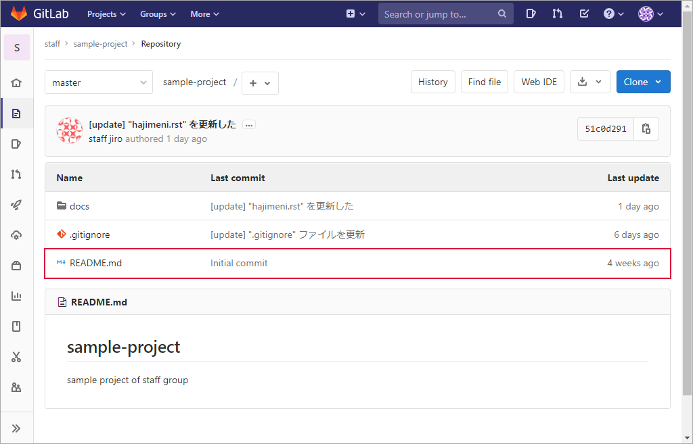
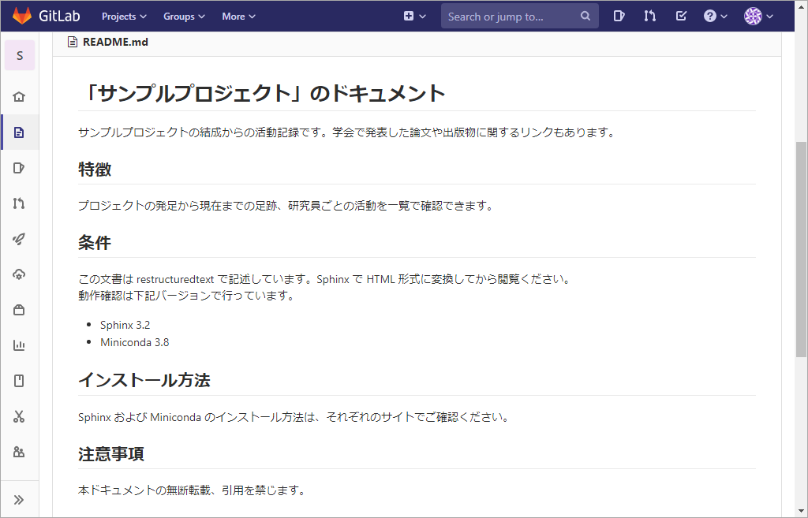

“README.md” ファイル¶
“README.md” ファイルとは¶
{kind=link}
README.md ファイルは訪問者にプロジェクトの説明をするファイルです。一言で表すとプロジェクトの紹介文であり、次の内容を含みます。
プロジェクトが行うこと
プロジェクトが有益な理由
プロジェクトの使い始める方法
プロジェクトに関するヘルプをどこで得るか
プロジェクトのメンテナンス者とコントリビューター（貢献している人）
訪問者はこの README.md ファイルの内容で、このプロジェクトを使用するか否か（＝ 自分にとってメリットがあるかどうか）の最初の判断をします。
拡張子の md は “markdown” の略です。拡張子が示すとおりマークダウン記法が使用できるので、単なるテキスト文書よりも表現に富んだ文書を作成できます。
テンプレート¶
下記のようなテンプレートを用意しておくと、記述漏れなどを防止できます。
# プロジェクト名
プロジェクトの内容を簡潔に説明した文章を記述する。
## 特徴
セールスポイントや特徴などを記述する。
## 条件
このプロジェクトを使用するための条件を記述する。ツール類であれば、動作させるのに必要なライブラリなどを列挙する。
* Sphinx 3.2
* Miniconda 3.8
## インストール方法
このプロジェクトや「条件」に列記したライブラリなどのインストール方法（インストールコマンド）を記述する。デプロイが必要な場合は、そのデプロイ方法を記述する。
```bash
pip install -U Sphinx
```
## 使い方
このプロジェクトの使い方を記述する。
## 注意事項
注意事項などを記述する。
## 作成者
作成者や協力者などを列挙する
* 作成者
* 所属
* メールアドレス
## ライセンス
プロジェクトに関するライセンス情報などを記述する。公開範囲（例 社外秘 等）を記述しても良い。
## 謝辞
このプロジェクトに協力者や参考資料の出典元への謝辞を記載する。
サンプル¶
# 「サンプルプロジェクト」のドキュメント
サンプルプロジェクトの結成からの活動記録です。学会で発表した論文や出版物に関するリンクもあります。
## 特徴
プロジェクトの発足から現在までの足跡、研究員ごとの活動を一覧で確認できます。
## 条件
この文書は restructuredtext で記述しています。Sphinx で HTML 形式に変換してから閲覧ください。
動作確認は下記バージョンで行っています。
* Sphinx 3.2
* Miniconda 3.8
## インストール方法
Sphinx および Miniconda のインストール方法は、それぞれのサイトでご確認ください。
## 注意事項
本ドキュメントの無断転載、引用を禁じます。
## 作成者
* 作成者 サンプルプロジェクト・ドキュメント化チーム
* メールアドレス sanple-pj@sampleproject.com
## ライセンス
プロジェクトに関するライセンス情報などを記述する。公開範囲（例 社外秘 等）を記述しても良い。
## 謝辞
本ドキュメントの作成に協力いただいた研究員の皆様および日々研究員を支えてくださっている研究員のご家族の皆々様に深く感謝の意を表します。
表示例の一部です。
{kind=link}